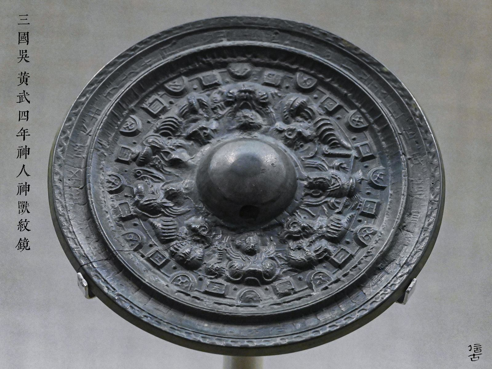
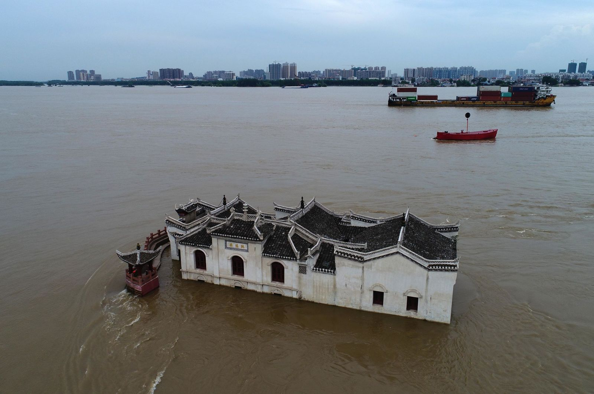

其一 · 鄂州历史
一座城，四个名字
鄂州的年纪，比「鄂州」这个名字大得多。它做过楚国的鄂邑、东吴的国都、武昌县、鄂城县，最后才叫回鄂州。名字换了四回，城址几乎没挪过——就在西山东麓、长江南岸这一小块地方。

八个节点，两千年
不必都记住。只要知道这条线：它先是「鄂」，再是「武昌」，又回到「鄂城」，最后成了「鄂州」。
秦置鄂县
秦始皇推行郡县制，在这里设鄂县，属南郡。此后两汉四百余年，地名一直是「鄂」。
孙权改鄂县为武昌
四月自公安迁鄂，取「以武而昌」之义改名武昌，分江夏置武昌郡；八月受魏封为吴王，筑武昌城。从此「武昌」这个名字用了上千年。
孙权在这里称帝
四月称帝，改元黄龙，武昌成了吴国的第一座都城。九月迁都建业，留陆逊辅佐太子孙登守武昌，此后长期作为「西都」。
「宁饮建业水，不食武昌鱼」
末帝孙皓把都城迁回武昌，江南世族不愿离乡，编出这句童谣。樊口的鳊鱼，也就是后来的武昌鱼，因为这句话出了名。
郢州改称鄂州
隋开皇九年废郡置州，受旧日鄂县、鄂郡之名影响，把郢州改为鄂州。「鄂州」两个字，第一次作为地名出现。
武昌县升为武昌军
南宋嘉定十四年升为武昌军，次年改名寿昌军，一度是江西路的治所。那时的鄂州，是长江中游的军政重镇。
寿昌县改名鄂城县
民国初年上下两个「武昌」重名，原武昌县先改为寿昌县，第二年再改为鄂城县。「鄂」字又回来了。
设立省辖鄂州市
撤销鄂城市、鄂城县，并入黄冈县黄州镇，成立省辖鄂州市——这就是今天的建制，我身份证上的籍贯。
城里留下来的三件老东西
历史在书上是年份，在地上是砖、是铜、是石头。鄂州城里这三样，我从小看到大。
吴王城
孙权筑的武昌城，今天还留着城址：东西长约 1100 米，南北宽约 500 米，总面积约 0.55 平方千米，是一座规整的长方形古城。2013 年，国务院把它列为第七批全国重点文物保护单位。
我上中学时骑车经过那一带，只觉得是普通的街。后来才知道，脚下就是吴国的都城。城不大，却是当时江南的政治、经济和文化中心。
铜镜
武昌是三国时期全国四大铸镜中心之一，鄂州因此有「铜镜之乡」的名声。鄂州市博物馆馆藏文物 8 万余件（套），其中一级文物 72 件（套），铜镜是最有分量的一类，从战国一直排到明清。
更让我意外的是，日本出土的不少铜镜上刻着「武昌」铭文——一千多年前，这里的手艺就已经顺着江和海走得很远。1976 年西山南麓出土的赤乌五年半圆方枚神兽镜，和那面四叶八凤佛兽镜，如今都是馆里的常设展品。

观音阁
它是万里长江上唯一一座建在江心礁石上的庙宇，被叫作「万里长江第一阁」。元至正五年，武昌的行政长官铁山在宋代小庙的基础上垒石成台，建起了这座阁；明清两代因为江水年年冲刷，反复修葺。
阁不大，一亭三殿二楼，观澜亭、东方朔殿、观音殿、老君殿、纯阳楼、寅宾楼挤在礁石上。汛期江水漫过基座，只露飞檐；枯水年景礁石全露，能走上去看。2017 年那张「阁坚强」的照片，就是它泡在洪水里还站着的模样。

鄂州人常说「上下武昌城，古今两鄂州」：今天的武汉武昌，和鄂州的老武昌，是两座城。坐高铁时听到「武昌」和「鄂州」，别坐错站。